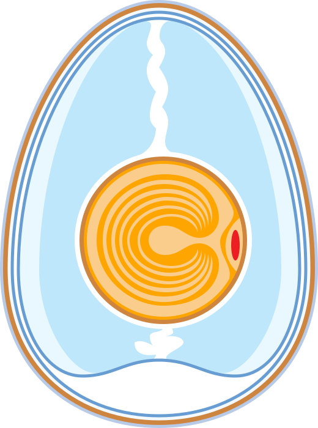

|

|
Mi is az a tojás?
A tojás egyetlen sejtből (petesejtből) és az azt
körülvevő tartalék tápanyagokból és védőrétegekből áll.
A petesejt, illetve megtermékenyülés után a zigóta a
tojás sárgája; ezt a tápanyagraktárként működő tojásfehérje
veszi körül. A tojást burkolatok védelmezik, amelynek fő alkotó
eleme általában a mész. Ennek köznyelvi neve a tojáshéj.
Jó tanácsok
- A tojást árnyékos, szellős, hűvös helyen érdemes tárolni, vagy
hűtőszekrényben. Megmosni csak közvetlenül felhasználás előtt
szabad, mert biológiai védőreteg van rajta.
- A nyers tojással készült ételek egészségesek a magasabb
vitamintartalom miatt. Ennek ellenére óvakodjanak a nyers
tojás fogyasztásától a kisgyermekek, a terhes nők, az idősek
és a betegek a fertőzésveszély és a tojásfehérje nyersen
káros egyik enzimje miatt.
|